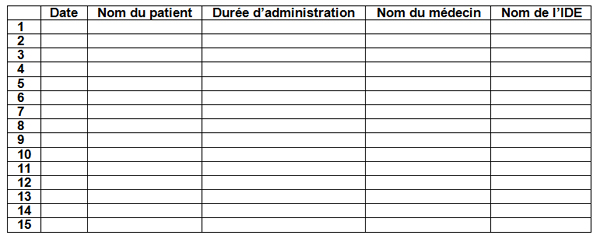

Bienvenue Sur Medical Education
Utilisation du MEOPA
Spécialité : pédiatrie /
Points importants
- Analgésie inhalatoire d’un médicament gazeux composé de 50% d’oxygène et de 50% de protoxyde d’azote médical (MEOPA = mélange équimoléculaire d’O2 et de protoxyde d’azote)
-
L’avantage de mélange équimoléculaire est :
- qu’il n’y a pas de risque de dépression respiratoire ni de perte de conscience
- qu’il y a maintien du réflexe de déglutition
- Le MEOPA est un analgésique qui permet au patient d’être relaxé dans un état de sédation consciente
- Objectif : prévenir et/ou rendre tolérable les gestes diagnostiques et thérapeutiques générateurs de douleurs iatrogènes
- Ses délais d’action et d’élimination sont tous deux de 3 min
Indications
- Enfant > 3 ans (âge de compréhension de la méthode)
- Tout geste modérément douloureux de courte durée (sans excéder 1 heure en continu ; idéalement 10-15 min)
-
Exemples :
- ponction lombaire
- ponction veineuse
- pansement de brûlé
- soins d’escarres
- ablation de sutures
- retrait de drain
- petite chirurgie superficielle
- réduction de fracture simple et certaines luxations périphériques
- transport de patients douloureux
Contre-indications
- Patient hypoxique
- HTIC (dilatation des vaisseaux cérébraux)
- Pneumothorax
- Emphysème
- Embolie gazeuse
- Syndrome occlusif
- Accident de plongée
- Traumatisme facial
- Déficit en vitamine B12
- Défaillance multiviscérale
- Altération de l’état de conscience ou non coopération possible du patient
- Utilisation déconseillée pendant le premier trimestre de la grossesse
Présentation du matériel
-
NB :
- Le masque transparent et le filtre sont à usage unique
- Le ballon et la valve sont utilisables 15 fois
- Connecter l’extrémité de la tubulure sur l’embout olivaire du débitmètre
- Connecter l’autre extrémité de la tubulure sur l’embout du dispositif
- Prendre un masque à usage unique, le connecter à un nouveau filtre antibactérien à usage unique
- Connecter ce matériel à usage unique avec le reste du dispositif
- Vérifier l’installation du dispositif d’administration sur le manodétendeur
Description de la technique
fichier_826 fichier_826 - - - Utilisation du MEOPA
Avant administration du MEOPA
- Sélectionner un masque adapté à la morphologie du patient
- Ouvrir la bouteille de MEOPA. S’assurer que l’aiguille du manomètre ne soit pas dans la zone rouge (sinon changer la bouteille)
- Bien expliquer préalablement au patient le but, les effets du traitement et le mode d’administration
- Préférer l’auto-administration
Pendant l’administration du MEOPA
- Débuter avec un débit de 6 L/min en prenant soin de démarrer l’administration avec un ballon gonflé
- Appliquer doucement le masque sur le visage du patient (ou demander au patient de l’appliquer)
- Vérifier l’étanchéité du système (absence de fuite entre le masque et le visage)
- Attendre au moins 3 min avant de pratiquer tout geste douloureux. Pendant cette période, le contact verbal doit être maintenu (rassurer, lui parler en permanence)
- Demander au patient de respirer normalement
- Le débit de gaz doit être adapté au patient
- L’inhalation doit être maintenue pendant toute la durée du geste douloureux
En fin d’administration du MEOPA
- Retirer le masque
- Il n’est pas nécessaire d’oxygéner le patient
- Fermer la bouteille de MEOPA
- Attendre la vidange complète, l’aiguille du manodétendeur revenant à zéro, puis fermer le débitmètre
- Déconnecter le dispositif du manodétendeur
- Jeter le masque et le filtre
-
Compléter la fiche de traçabilité :
- date d’administration
- nom du patient
- durée d’administration
- nom du médecin
- nom de l’infirmier(e)
 fichier_831 Tableau Fiche de traçabilité de l'administration de MEOPA
- Ranger le dispositif à l’endroit prévu à cet effet (si l’aiguille du même détendeur est dans la zone rouge, changez tout de suite la bouteille avant rangement)
Précautions d’emploi
- Le local doit être correctement ventilé
- Stockage et température d’utilisation entre 0° et 50° C
- Les bouteilles de MEOPA doivent être stockées en position verticale pendant au moins 48 heures avant l’utilisation. Elles doivent être systématiquement arrimées
- Le MEOPA est un comburant. Ne pas utiliser de corps gras (huile, lubrifiant) ou de corps organique (bois, papier, plastique, tissu) à proximité du mélange. Risque de s’enflammer.
- Ne pas fumer
- Ne pas approcher d’une flamme
-
Local équipé :
- d’une source d’oxygène
- d’un matériel d’aspiration et de ventilation
- d’un chariot d’urgence à proximité
-
L’administration du MEOPA :
- doit être faite dans des locaux adaptés
- doit être immédiatement interrompue en cas de perte de contact verbal
- En cas d’apparition de sédation avec perte de contact verbal, le masque sera retiré jusqu’à reprise du contact verbal. L’administration de MEOPA sera reprise à un débit plus faible
- Pas d’administration > 60 min en continu
Complications
Effets indésirables rares (disparaissant dans les minutes qui suivent l’arrêt de l’inhalation)
- Euphorie, rêve
- Paresthésies
- Sédation profonde
- Sensation de vertige
- Nausées, vomissements
- Modification des perceptions sensorielles
- Angoisse, agitation
- Céphalées
Surveillance
- Une personne doit être spécifiquement dédiée à la surveillance du patient
- SpO2
- Attention aux patients sous dépresseurs du système nerveux central (morphiniques, benzodiazépines) : risque de somnolence, de désaturation, de vomissements, d’HoTA
- Ajuster le débit de gaz pour que le ballon soit toujours gonflé
- Vérifier régulièrement l’absence de fuite autour du masque
- Degré de vigilance du patient (maintien permanent du contact verbal)
- Surveillance clinique des patients ambulatoires après administration de MEOPA jusqu’à disparition des effets indésirables éventuels et retour à leur état de vigilance antérieure
Auteur(s) : Patrick PLAISANCE